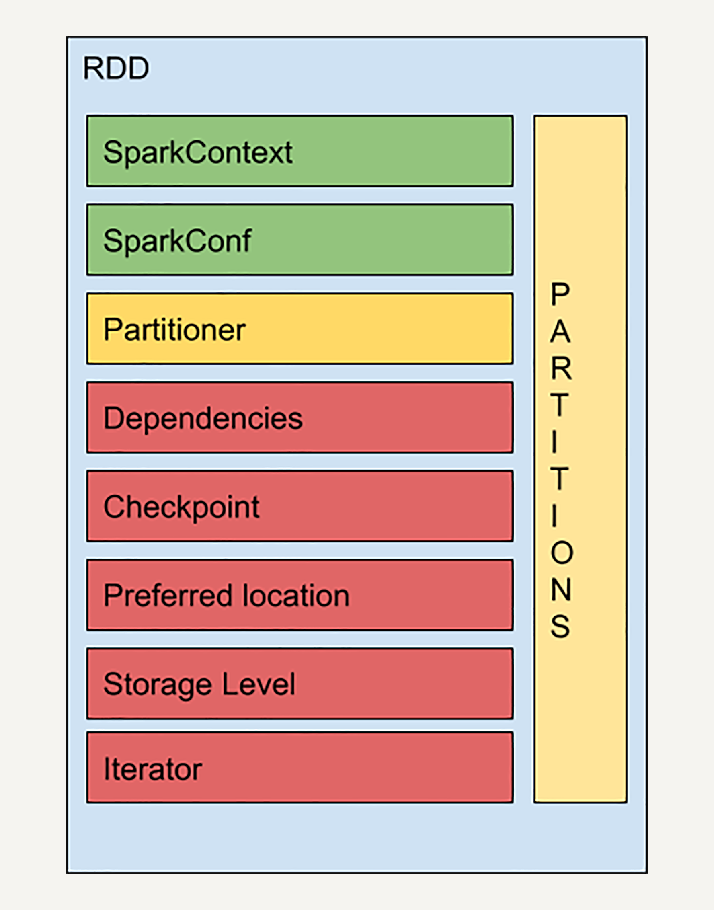

- 00 开篇词 从这里开始，带你走上硅谷一线系统架构师之路.md.html
- 01 为什么MapReduce会被硅谷一线公司淘汰？.md.html
- 02 MapReduce后谁主沉浮：怎样设计下一代数据处理技术？.md.html
- 03 大规模数据处理初体验：怎样实现大型电商热销榜？.md.html
- 04 分布式系统（上）：学会用服务等级协议SLA来评估你的系统.md.html
- 05 分布式系统（下）：架构师不得不知的三大指标.md.html
- 06 如何区分批处理还是流处理？.md.html
- 07 Workflow设计模式：让你在大规模数据世界中君临天下.md.html
- 08 发布_订阅模式：流处理架构中的瑞士军刀.md.html
- 09 CAP定理：三选二，架构师必须学会的取舍.md.html
- 10 Lambda架构：Twitter亿级实时数据分析架构背后的倚天剑.md.html
- 11 Kappa架构：利用Kafka锻造的屠龙刀.md.html
- 12 我们为什么需要Spark？.md.html
- 13 弹性分布式数据集：Spark大厦的地基（上）.md.html
- 14 弹性分布式数据集：Spark大厦的地基（下）.md.html
- 15 Spark SQL：Spark数据查询的利器.md.html
- 16 Spark Streaming：Spark的实时流计算API.md.html
- 17 Structured Streaming：如何用DataFrame API进行实时数据分析_.md.html
- 18 Word Count：从零开始运行你的第一个Spark应用.md.html
- 19 综合案例实战：处理加州房屋信息，构建线性回归模型.md.html
- 20 流处理案例实战：分析纽约市出租车载客信息.md.html
- 21 深入对比Spark与Flink：帮你系统设计两开花.md.html
- 22 Apache Beam的前世今生.md.html
- 23 站在Google的肩膀上学习Beam编程模型.md.html
- 24 PCollection：为什么Beam要如此抽象封装数据？.md.html
- 25 Transform：Beam数据转换操作的抽象方法.md.html
- 26 Pipeline：Beam如何抽象多步骤的数据流水线？.md.html
- 27 Pipeline I_O_ Beam数据中转的设计模式.md.html
- 28 如何设计创建好一个Beam Pipeline？.md.html
- 29 如何测试Beam Pipeline？.md.html
- 30 Apache Beam实战冲刺：Beam如何run everywhere_.md.html
- 31 WordCount Beam Pipeline实战.md.html
- 32 Beam Window：打通流处理的任督二脉.md.html
- 33 横看成岭侧成峰：再战Streaming WordCount.md.html
- 34 Amazon热销榜Beam Pipeline实战.md.html
- 35 Facebook游戏实时流处理Beam Pipeline实战（上）.md.html
- 36 Facebook游戏实时流处理Beam Pipeline实战（下）.md.html
- 37 5G时代，如何处理超大规模物联网数据.md.html
- 38 大规模数据处理在深度学习中如何应用？.md.html
- 39 从SQL到Streaming SQL：突破静态数据查询的次元.md.html
- 40 大规模数据处理未来之路.md.html
- FAQ第一期 学习大规模数据处理需要什么基础？.md.html
- FAQ第三期 Apache Beam基础答疑.md.html
- FAQ第二期 Spark案例实战答疑.md.html
- 加油站 Practice makes perfect！.md.html
- 结束语 世间所有的相遇，都是久别重逢.md.html
- 捐赠
14 弹性分布式数据集：Spark大厦的地基（下）
你好，我是蔡元楠。
上一讲我们介绍了弹性分布式数据集（RDD）的定义、特性以及结构，并且深入讨论了依赖关系（Dependencies）。
今天让我们一起来继续学习RDD的其他特性。
RDD的结构
首先，我来介绍一下RDD结构中其他的几个知识点：检查点（Checkpoint）、存储级别（ Storage Level）和迭代函数（Iterator）。

通过上一讲，你应该已经知道了，基于RDD的依赖关系，如果任意一个RDD在相应的节点丢失，你只需要从上一步的RDD出发再次计算，便可恢复该RDD。
但是，如果一个RDD的依赖链比较长，而且中间又有多个RDD出现故障的话，进行恢复可能会非常耗费时间和计算资源。
而检查点（Checkpoint）的引入，就是为了优化这些情况下的数据恢复。
很多数据库系统都有检查点机制，在连续的transaction列表中记录某几个transaction后数据的内容，从而加快错误恢复。
RDD中的检查点的思想与之类似。
在计算过程中，对于一些计算过程比较耗时的RDD，我们可以将它缓存至硬盘或HDFS中，标记这个RDD有被检查点处理过，并且清空它的所有依赖关系。同时，给它新建一个依赖于CheckpointRDD的依赖关系，CheckpointRDD可以用来从硬盘中读取RDD和生成新的分区信息。
这样，当某个子RDD需要错误恢复时，回溯至该RDD，发现它被检查点记录过，就可以直接去硬盘中读取这个RDD，而无需再向前回溯计算。
存储级别（Storage Level）是一个枚举类型，用来记录RDD持久化时的存储级别，常用的有以下几个：
MEMORY_ONLY：只缓存在内存中，如果内存空间不够则不缓存多出来的部分。这是RDD存储级别的默认值。
MEMORY_AND_DISK：缓存在内存中，如果空间不够则缓存在硬盘中。
DISK_ONLY：只缓存在硬盘中。
MEMORY_ONLY_2和MEMORY_AND_DISK_2等：与上面的级别功能相同，只不过每个分区在集群中两个节点上建立副本。
这就是我们在前文提到过的，Spark相比于Hadoop在性能上的提升。我们可以随时把计算好的RDD缓存在内存中，以便下次计算时使用，这大幅度减小了硬盘读写的开销。
迭代函数（Iterator）和计算函数（Compute）是用来表示RDD怎样通过父RDD计算得到的。
迭代函数会首先判断缓存中是否有想要计算的RDD，如果有就直接读取，如果没有，就查找想要计算的RDD是否被检查点处理过。如果有，就直接读取，如果没有，就调用计算函数向上递归，查找父RDD进行计算。
到现在，相信你已经对弹性分布式数据集的基本结构有了初步了解。但是光理解RDD的结构是远远不够的，我们的终极目标是使用RDD进行数据处理。
要使用RDD进行数据处理，你需要先了解一些RDD的数据操作。
在第12讲中，我曾经提过，相比起MapReduce只支持两种数据操作，Spark支持大量的基本操作，从而减轻了程序员的负担。
接下来，让我们进一步了解基于RDD的各种数据操作。
RDD的转换操作
RDD的数据操作分为两种：转换（Transformation）和动作（Action）。
顾名思义，转换是用来把一个RDD转换成另一个RDD，而动作则是通过计算返回一个结果。
不难想到，之前举例的map、filter、groupByKey等都属于转换操作。
Map
map是最基本的转换操作。
与MapReduce中的map一样，它把一个RDD中的所有数据通过一个函数，映射成一个新的RDD，任何原RDD中的元素在新RDD中都有且只有一个元素与之对应。
在这一讲中提到的所有的操作，我都会使用代码举例，帮助你更好地理解。
rdd = sc.parallelize(["b", "a", "c"])
rdd2 = rdd.map(lambda x: (x, 1)) // [('b', 1), ('a', 1), ('c', 1)]
Filter
filter这个操作，是选择原RDD里所有数据中满足某个特定条件的数据，去返回一个新的RDD。如下例所示，通过filter，只选出了所有的偶数。
rdd = sc.parallelize([1, 2, 3, 4, 5])
rdd2 = rdd.filter(lambda x: x % 2 == 0) // [2, 4]
mapPartitions
mapPartitions是map的变种。不同于map的输入函数是应用于RDD中每个元素，mapPartitions的输入函数是应用于RDD的每个分区，也就是把每个分区中的内容作为整体来处理的，所以输入函数的类型是Iterator[T] => Iterator[U]。
rdd = sc.parallelize([1, 2, 3, 4], 2)
def f(iterator): yield sum(iterator)
rdd2 = rdd.mapPartitions(f) // [3, 7]
在mapPartitions的例子中，我们首先创建了一个有两个分区的RDD。mapPartitions的输入函数是对每个分区内的元素求和，所以返回的RDD包含两个元素：1+2=3 和3+4=7。
groupByKey
groupByKey和SQL中的groupBy类似，是把对象的集合按某个Key来归类，返回的RDD中每个Key对应一个序列。
rdd = sc.parallelize([("a", 1), ("b", 1), ("a", 2)])
rdd.groupByKey().collect()
//"a" [1, 2]
//"b" [1]
在此，我们只列举这几个常用的、有代表性的操作，对其他转换操作感兴趣的同学可以去自行查阅官方的API文档。
RDD的动作操作
让我们再来看几个常用的动作操作。
Collect
RDD中的动作操作collect与函数式编程中的collect类似，它会以数组的形式，返回RDD的所有元素。需要注意的是，collect操作只有在输出数组所含的数据数量较小时使用，因为所有的数据都会载入到程序的内存中，如果数据量较大，会占用大量JVM内存，导致内存溢出。
rdd = sc.parallelize(["b", "a", "c"])
rdd.map(lambda x: (x, 1)).collect() // [('b', 1), ('a', 1), ('c', 1)]
实际上，上述转换操作中所有的例子，最后都需要将RDD的元素collect成数组才能得到标记好的输出。
Reduce
与MapReduce中的reduce类似，它会把RDD中的元素根据一个输入函数聚合起来。
from operator import add
sc.parallelize([1, 2, 3, 4, 5]).reduce(add) // 15
Count
Count会返回RDD中元素的个数。
sc.parallelize([2, 3, 4]).count() // 3
CountByKey
仅适用于Key-Value pair类型的 RDD，返回具有每个 key 的计数的
rdd = sc.parallelize([("a", 1), ("b", 1), ("a", 1)])
sorted(rdd.countByKey().items()) // [('a', 2), ('b', 1)]
讲到这，你可能会问了，为什么要区分转换和动作呢？虽然转换是生成新的RDD，动作是把RDD进行计算生成一个结果，它们本质上不都是计算吗？
这是因为，所有转换操作都很懒，它只是生成新的RDD，并且记录依赖关系。
但是Spark并不会立刻计算出新RDD中各个分区的数值。直到遇到一个动作时，数据才会被计算，并且输出结果给Driver。
比如，在之前的例子中，你先对RDD进行map转换，再进行collect动作，这时map后生成的RDD不会立即被计算。只有当执行到collect操作时，map才会被计算。而且，map之后得到的较大的数据量并不会传给Driver，只有collect动作的结果才会传递给Driver。
这种惰性求值的设计优势是什么呢？让我们来看这样一个例子。
假设，你要从一个很大的文本文件中筛选出包含某个词语的行，然后返回第一个这样的文本行。你需要先读取文件textFile()生成rdd1，然后使用filter()方法生成rdd2，最后是行动操作first()，返回第一个元素。
读取文件的时候会把所有的行都存储起来，但我们马上就要筛选出只具有特定词组的行了，等筛选出来之后又要求只输出第一个。这样是不是太浪费存储空间了呢？确实。
所以实际上，Spark是在行动操作first()的时候开始真正的运算：只扫描第一个匹配的行，不需要读取整个文件。所以，惰性求值的设计可以让Spark的运算更加高效和快速。
让我们总结一下Spark执行操作的流程吧。
Spark在每次转换操作的时候，使用了新产生的 RDD 来记录计算逻辑，这样就把作用在 RDD 上的所有计算逻辑串起来，形成了一个链条。当对 RDD 进行动作时，Spark 会从计算链的最后一个RDD开始，依次从上一个RDD获取数据并执行计算逻辑，最后输出结果。
RDD的持久化（缓存）
每当我们对RDD调用一个新的action操作时，整个RDD都会从头开始运算。因此，如果某个RDD会被反复重用的话，每次都从头计算非常低效，我们应该对多次使用的RDD进行一个持久化操作。
Spark的persist()和cache()方法支持将RDD的数据缓存至内存或硬盘中，这样当下次对同一RDD进行Action操作时，可以直接读取RDD的结果，大幅提高了Spark的计算效率。
rdd = sc.parallelize([1, 2, 3, 4, 5])
rdd1 = rdd.map(lambda x: x+5)
rdd2 = rdd1.filter(lambda x: x % 2 == 0)
rdd2.persist()
count = rdd2.count() // 3
first = rdd2.first() // 6
rdd2.unpersist()
在文中的代码例子中你可以看到，我们对RDD2进行了多个不同的action操作。由于在第四行我把RDD2的结果缓存在内存中，所以Spark无需从一开始的rdd开始算起了（持久化处理过的RDD只有第一次有action操作时才会从源头计算，之后就把结果存储下来，所以在这个例子中，count需要从源头开始计算，而first不需要）。
在缓存RDD的时候，它所有的依赖关系也会被一并存下来。所以持久化的RDD有自动的容错机制。如果RDD的任一分区丢失了，通过使用原先创建它的转换操作，它将会被自动重算。
持久化可以选择不同的存储级别。正如我们讲RDD的结构时提到的一样，有MEMORY_ONLY，MEMORY_AND_DISK，DISK_ONLY等。cache()方法会默认取MEMORY_ONLY这一级别。
小结
Spark在每次转换操作的时候使用了新产生的 RDD 来记录计算逻辑，这样就把作用在 RDD 上的所有计算逻辑串起来形成了一个链条，但是并不会真的去计算结果。当对 RDD 进行动作Action时，Spark 会从计算链的最后一个RDD开始，利用迭代函数（Iterator）和计算函数（Compute），依次从上一个RDD获取数据并执行计算逻辑，最后输出结果。
此外，我们可以通过将一些需要复杂计算和经常调用的RDD进行持久化处理，从而提升计算效率。
思考题
对RDD进行持久化操作和记录Checkpoint，有什么区别呢？
欢迎你把对弹性分布式数据集的疑问写在留言区，与我和其他同学一起讨论。如果你觉得有所收获，也欢迎把文章分享给你的朋友。
© 2019 - 2023 Liangliang Lee. Powered by gin and hexo-theme-book.